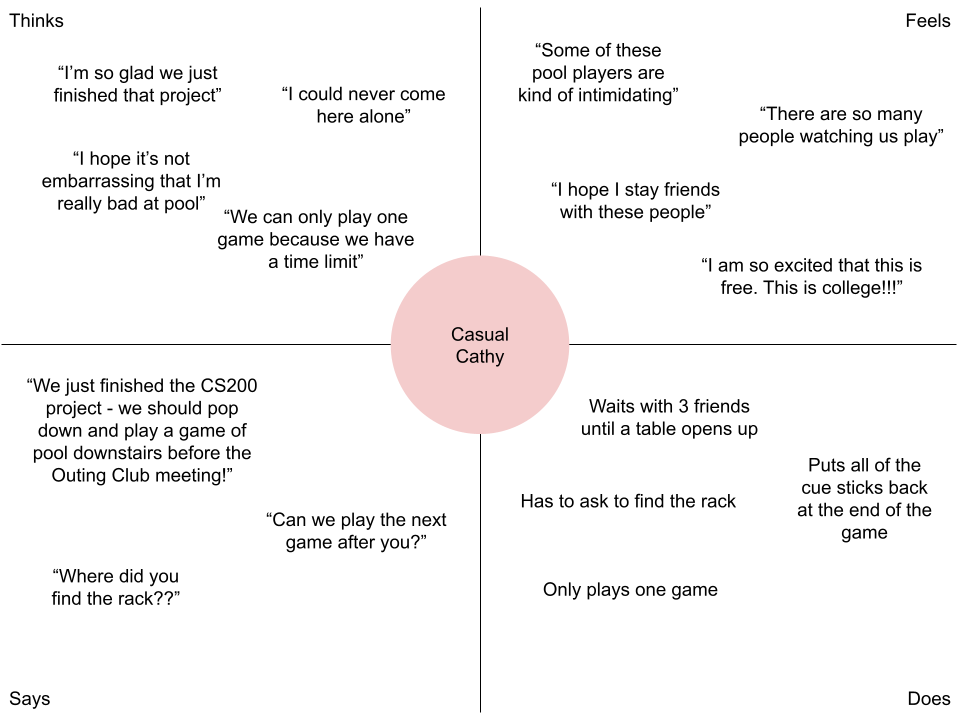

Personas & Storyboarding: CSCI 1300 Project 1
This is an assignment for CSCI 1300: User Interfaces and User Experience at Brown University.
Over the course of the assignment, I investigated the usage and accessibility of the
pool-table area in the student center at Brown. I was curious if the equipment Interfaces
were obvious for different types of users (beginner, casual, repeat), and how affordances
of the space affected the usage and demographics of the users. Below is documentation on
my preparation, observations, and summaries.
Part 1: Preparation
Chosen Interface: Pool area (equipment and user ordering systems)
The pool area space has multiple interactive components. There are two equipment areas: the cue stick
rack and the pool tables themselves, which store the balls and the rack on a built-in shelf.
Additionally, there is an implied social interface of tables nearby where waiting players can stand.
The equipment interface solves the problem of storing equipment in between user turns and giving
users access to different equipment options. The cue stick rack works by slotting the pole up through a hole
and settling it down into a holster. The rack shelf is a hole in the side of the pool table, and the
balls are stored in a central space that is fed to by the holes in the pool table, below the rack shelf.
Prepared questions:
- How often do you use the pool table area?
- What steps would you take to begin a game?
- Is equipment usually where you expect it to be?
- What steps would you take immediately when a game ends?
- How often do you play with others?
- Do you ever find the tables full when you're trying to use them? How do you approach that situation?
Part 3: Personas
Persona 1: Practicing Paul
Paul, a junior, is a frequenter of the Faunce basement pool area - he is a little bit stressed out because he has lots of projects due this week, but is coming for his every-other-day practice, with his special gloves and notebook in tow.
In terms of the interface, Paul knows exactly where everything is because he's here a lot. However, he feels a sense of entitlement in the space,
so he doesn't feel the need to put away his stick when he's done - he doesn't mind when others leave the stick on the table, and the affordances
of the interface allow him to misuse it in this way.

This persona represents users that I interviewed who exhibited similar behavior: coming for multiple solo games, seeing pool
as a hobby, bringing his own equipment, etc.
Persona 2: Casual Cathy
Cathy, a first-year, has decided to pop down to the basement for a quick game of pool because she just finished a big academic project with her friends and has time before the club meeting that she is attending. She has played pool before college, but never before in the basement of Faunce.
In terms of the interface, Cathy struggles to find specific tools, such as the chalk or where the rack is located, but feels a sense
of respect for the space, so she and her friends put everything back on the rack.

This persona represents other users that I interviewed, who were more hesitant, intimidated, or indifferent to the space
to use it in a way that Paul does.